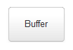
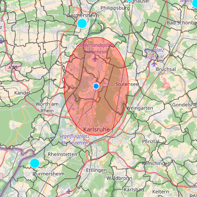
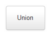
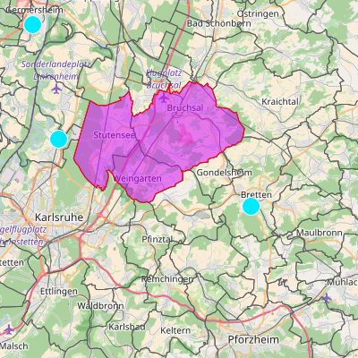
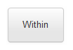
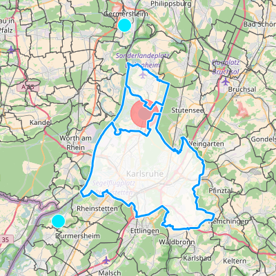
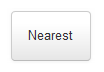
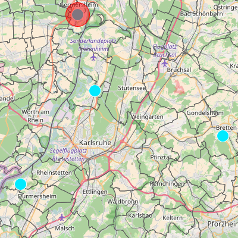
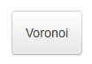
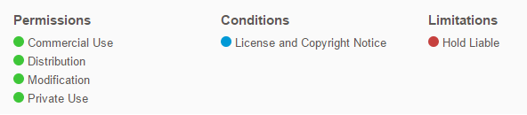

Information
Web map project was created by international students at the Karlsruhe University of Applied Sciences.
Our project thema was: Client-side spatial analysis of radiological data using turf.js (Buffer, Intersections, Interpolation, Voronoi, TIN).
Our goal was: to develop a web map where it is possible to edit a vector datas with turf.js. This webmap is available for everybody to use it for free. Our licence is MIT License. We used for the project OpenLayers3, turf.js, JavaScript, HTML, CSS, QGIS.
Users' Manual
| Tools | Description | Results |
|---|---|---|
|  |
Creates a new layer with the Buffer polygons.The user may select points or polygons. Also, the user must fill in required fields: Layer name, layer title, Details (Buffer distance in milles or kilometers) and if it like to select the layer. |
 |
|  |
Create a new layer with the dissolved feature.The user has to select more than one polyngon. Fill in required fields: Layer name, layer title, and if it like to select the layer. |
 |
|  |
Create a new layer only with the point features which are within the selected polygons.The user must to select continuous polygons which has points inside. The user must fill in the required fields: Layer name, layer title, and if it like to select the layer. |
 |
|  |
Creates a new layer which contains the nearest point to the selected point.The user must to select only one point. The user must fill in the required fields: Layer name, layer title, and if it like to select the layer. |
 |
|  |
Create a new layer with voronoi diagramThis tool allows create Voronoi maps, this are constructed from a series of polygons formed around the location of a sample point. |
 |
License
Our licence is MIT License. This is a simple type whose conditions only requiring preservation of copyright and license notices. Licensed works, modifications, and larger works may be distributed under different terms and without source code.
More information about license: http://choosealicense.com/licenses/mit/